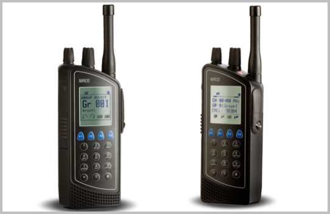
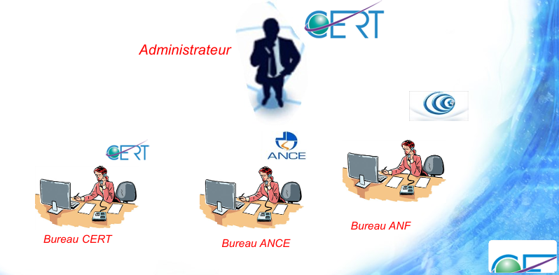

<div class="templet_bg">
  
   <div class="solution_section layout_padding">
    <div class="container">
      <h1 class="solution_text">Centre d’Etudes et de Recherche  
         des Télécommunications &  Agence Nationale des Fréquences </h1>
      <div class="image_3"></div>
      <div class="regulation-container">
        <p class="ipsum_text regulation">Regulations:</p>
        <p class="ipsum_text">Law No. 2001-1 of January 15, 2001, making the Telecommunications Code.
          <br>
           Article 32: Telecommunications terminal equipment imported or manufactured in Tunisia and intended for marketing or public use, whether or not they are intended to be connected to the public telecommunications network, are subject to prior approval. The conditions and procedures for this approval are fixed by decree.
          <br>
          <br>
          Decrees:
          <br>
          Decree No. 2001-830 of April 14, 2001, on the approval of telecommunications terminal equipment and radio terminal equipment.
          <br>
          Decree No. 2008-2639 of July 21, 2008, laying down the conditions and procedures for the import, offer for sale and sale of means or services for encrypting through telecommunications networks.
        </p>
      </div>

      <div class="regulation-container">
        <p class="ipsum_text regulation">Decrees:</p>
        <p class="ipsum_text">Minister of Communication Technologies Order dated February 11, 2002, approving the National Radio Frequency Plan.
          <br>
          Minister of Industry and Technology Order dated November 22, 2011, establishing the maximum power and range limit for low-power and limited-range radio equipment.
          <br>
          <br>
          Regulatory Framework:
          <br>
          Any telecommunication equipment intended to be directly or indirectly connected to a network open to the public.
          <br>
          Any modification of the technical characteristics tested during approval or the external appearance of the approved product or its commercial or technical designation must be the subject of a new approval request.
        </p>
      </div>

      <div class="make_bt"><a href="https://www.phoenix-testlab.de/en/radio-technology-faqs-the-most-important-questions-explained-simply" target="_blank">Read More</a></div>
   </div>
   <!-- solution section end --> 
   <!-- template section start -->
   <div class="template_section layout_padding">
     <div class="container">
       <h1 class="solution_text">Type of Equipments</h1>
        
         <div class="carousel-inner">
           <div class="carousel-item active">
             <div class="row">
               <div class="col-sm-4">
                 <div class="image_5"></div>
                 <h3 class="cool_text">Telecommunications terminal equipment</h3>
                 <p class="lorem_dolor_text">This refers to devices or equipment used at the end of a telecommunications network to transmit or receive data, voice, or other forms of communication. Examples include telephones, fax machines, modems, routers, and mobile phones. These devices are essential for connecting users to the telecommunication network.</p>
               </div>
               <div class="col-sm-4">
                 <div class="image_5 mt-5" style="height: max-content;" ></div>
                 <h3 class="cool_text">Encryption means, systems</h3>
                 <p class="lorem_dolor_text">Encryption means the process of encoding information in such a way that only authorized parties can access it. Encryption systems consist of algorithms and protocols designed to secure data by converting it into an unreadable format. These systems ensure confidentiality, integrity, and authenticity of data during transmission or storage. Encryption is used to protect sensitive information such as personal data, financial transactions, and confidential communications.</p>
               </div>
               <div class="col-sm-4">
                 <div class="image_5 mt-4"></div>
                 <h3 class="cool_text">Radio terminal equipment</h3>
                 <p class="lorem_dolor_text">Radio terminal equipment refers to devices that send and receive radio signals for communication purposes. This includes radios, walkie-talkies, transceivers, and other wireless communication devices. Radio terminal equipment is used in various industries such as broadcasting, public safety, military, aviation, maritime, and amateur radio. These devices operate on specific radio frequencies and are regulated to ensure efficient and interference-free communication.</p>
               </div>
             </div>
         </div>
       </div>
     </div>
   </div>
   <!-- template section end -->
   <!-- design section start -->
   <div class="design_section layout_padding">
     <div class="container">
       <h1>The Most Important Questions Explained Simply</h1>
       
       <div class="accordion accordion-flush" id="accordionFlushExample">
         <div class="accordion-item">
           <h2 class="accordion-header">
             <button class="accordion-button collapsed" type="button" data-bs-toggle="collapse" data-bs-target="#flush-collapseOne" aria-expanded="false" aria-controls="flush-collapseOne">
               Administrator and Offices ?
             </button>
           </h2>
           <div id="flush-collapseOne" class="accordion-collapse collapse" data-bs-parent="#accordionFlushExample">
             <div class="accordion-body" style="font-size:larger ;">The administrator is responsible for coordinating with <b>CERT</b>, <b>ANCE</b>, and <b>ANF offices</b>, as well as handling requests at the ICT one-stop shop.</div>
           
             <div></div>
            </div>
         </div>
         <div class="accordion-item">
           <h2 class="accordion-header">
             <button class="accordion-button collapsed" type="button" data-bs-toggle="collapse" data-bs-target="#flush-collapseTwo" aria-expanded="false" aria-controls="flush-collapseTwo">
               Frequency Allocation Procedure ?
             </button>
           </h2>
           <div id="flush-collapseTwo" class="accordion-collapse collapse" data-bs-parent="#accordionFlushExample">
             <div class="accordion-body" style="font-size:larger ;">Applications for radio frequency allocation must include administrative and technical data, along with a frequency allocation request form.</div>
           </div>
         </div>
         <div class="accordion-item">
           <h2 class="accordion-header">
             <button class="accordion-button collapsed" type="button" data-bs-toggle="collapse" data-bs-target="#flush-collapseThree" aria-expanded="false" aria-controls="flush-collapseThree">
               Online Services ?
             </button>
           </h2>
           <div id="flush-collapseThree" class="accordion-collapse collapse" data-bs-parent="#accordionFlushExample">
             <div class="accordion-body" style="font-size:larger ;">The ICT one-stop shop provides online services for filing, consulting, and tracking requests, offering flexibility and ease of use.</div>
           </div>
         </div>
         <div class="accordion-item">
            <h2 class="accordion-header">
              <button class="accordion-button collapsed" type="button" data-bs-toggle="collapse" data-bs-target="#flush-collapseFour" aria-expanded="false" aria-controls="flush-collapseThree">
               Homologation Procedures ?
              </button>
            </h2>
            <div id="flush-collapseFour" class="accordion-collapse collapse" data-bs-parent="#accordionFlushExample">
              <div class="accordion-body" style="font-size:larger ;">Telecommunications terminal equipment must undergo a homologation process, including homologation and compliance certificates.</div>
            </div>
          </div>
          <div class="accordion-item">
            <h2 class="accordion-header">
              <button class="accordion-button collapsed" type="button" data-bs-toggle="collapse" data-bs-target="#flush-collapseFive" aria-expanded="false" aria-controls="flush-collapseThree">
               Frequency Management ?
              </button>
            </h2>
            <div id="flush-collapseFive" class="accordion-collapse collapse" data-bs-parent="#accordionFlushExample">
              <div class="accordion-body" style="font-size:larger ;">he process involves planning, assigning, and managing radio frequency spectrum in accordance with current regulations.</div>
            </div>
          </div>

          <div class="accordion-item">
            <h2 class="accordion-header">
              <button class="accordion-button collapsed" type="button" data-bs-toggle="collapse" data-bs-target="#flush-collapsesix" aria-expanded="false" aria-controls="flush-collapseThree">
               Why do i need the certificate of Approval(Homologation) ?
              </button>
            </h2>
            <div id="flush-collapsesix" class="accordion-collapse collapse" data-bs-parent="#accordionFlushExample">
              <div class="accordion-body" style="font-size:larger ;">
<li>1- User safety: Homologation ensures that telecommunications equipment is safe to use for end-users, minimizing health and safety risks.</li><br>
<li>2- Safety of personnel operating public telecommunications networks: It guarantees that the equipment does not pose hazards to the personnel installing, configuring, and maintaining them, thereby maintaining a safe working environment.</li><br>
<li>3- Protection of the public telecommunications network: Homologation ensures that the equipment does not disrupt the proper functioning of the network and does not compromise its security and reliability.</li><br>
<li>4- Proper use of radio frequency spectrum: It ensures that the equipment efficiently and responsibly utilizes available radio frequency spectrum, avoiding interference with other systems and ensuring optimal spectrum usage.</li><br>
            
            </div>
            </div>
          </div>
          
       </div>

   <!-- design section end --> 

   

   
   </div>